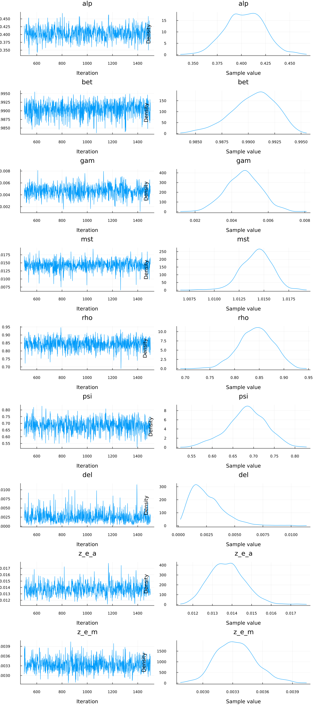
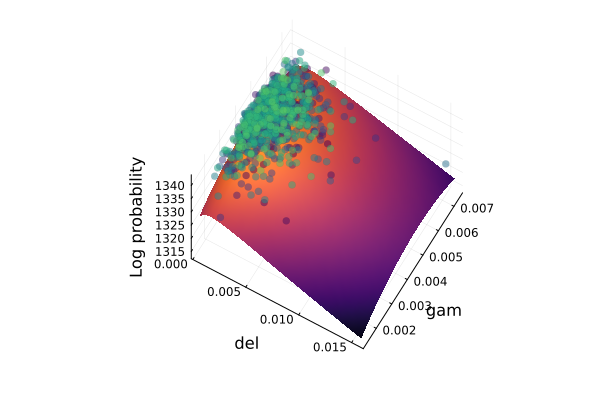
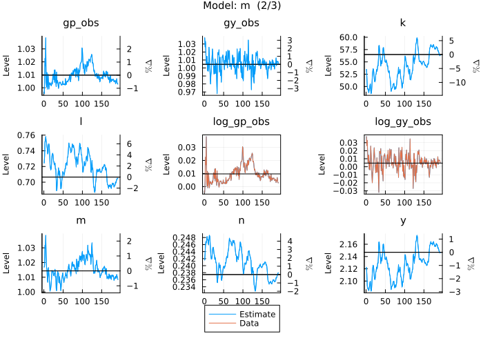
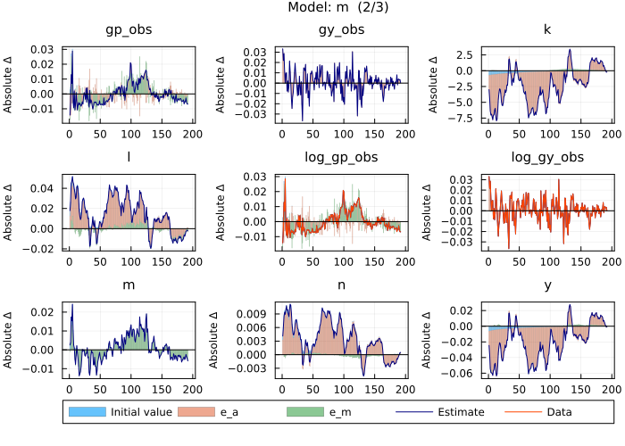

Estimate a simple model - Schorfheide (2000)
This tutorial is intended to show the workflow to estimate a model using the No-U-Turn sampler (NUTS). The tutorial works with a benchmark model for estimation and can therefore be compared to results from other software packages (e.g. dynare).
Define the model
The first step is always to name the model and write down the equations. For the Schorfheide (2000) model this would go as follows:
julia> using MacroModellingjulia> @model FS2000 begin dA[0] = exp(gam + z_e_a * e_a[x]) log(m[0]) = (1 - rho) * log(mst) + rho * log(m[-1]) + z_e_m * e_m[x] - P[0] / (c[1] * P[1] * m[0]) + bet * P[1] * (alp * exp( - alp * (gam + log(e[1]))) * k[0] ^ (alp - 1) * n[1] ^ (1 - alp) + (1 - del) * exp( - (gam + log(e[1])))) / (c[2] * P[2] * m[1])=0 W[0] = l[0] / n[0] - (psi / (1 - psi)) * (c[0] * P[0] / (1 - n[0])) + l[0] / n[0] = 0 R[0] = P[0] * (1 - alp) * exp( - alp * (gam + z_e_a * e_a[x])) * k[-1] ^ alp * n[0] ^ ( - alp) / W[0] 1 / (c[0] * P[0]) - bet * P[0] * (1 - alp) * exp( - alp * (gam + z_e_a * e_a[x])) * k[-1] ^ alp * n[0] ^ (1 - alp) / (m[0] * l[0] * c[1] * P[1]) = 0 c[0] + k[0] = exp( - alp * (gam + z_e_a * e_a[x])) * k[-1] ^ alp * n[0] ^ (1 - alp) + (1 - del) * exp( - (gam + z_e_a * e_a[x])) * k[-1] P[0] * c[0] = m[0] m[0] - 1 + d[0] = l[0] e[0] = exp(z_e_a * e_a[x]) y[0] = k[-1] ^ alp * n[0] ^ (1 - alp) * exp( - alp * (gam + z_e_a * e_a[x])) gy_obs[0] = dA[0] * y[0] / y[-1] gp_obs[0] = (P[0] / P[-1]) * m[-1] / dA[0] log_gy_obs[0] = log(gy_obs[0]) log_gp_obs[0] = log(gp_obs[0]) endModel: FS2000 Variables Total: 18 Auxiliary: 2 States: 4 Auxiliary: 0 Jumpers: 7 Auxiliary: 2 Shocks: 2 Parameters: 9
First, we load the package and then use the @model macro to define our model. The first argument after @model is the model name and will be the name of the object in the global environment containing all information regarding the model. The second argument to the macro are the equations, which we write down between begin and end. Equations can contain an equality sign or the expression is assumed to equal 0. Equations cannot span multiple lines (unless you wrap the expression in brackets) and the timing of endogenous variables are expressed in the square brackets following the variable name (e.g. [-1] for the past period). Exogenous variables (shocks) are followed by a keyword in square brackets indicating them being exogenous (in this case [x]). Note that names can leverage julia's unicode capabilities (e.g. alpha can be written as α).
Define the parameters
Next we need to add the parameters of the model. The macro @parameters takes care of this:
julia> @parameters FS2000 begin alp = 0.356 bet = 0.993 gam = 0.0085 mst = 1.0002 rho = 0.129 psi = 0.65 del = 0.01 z_e_a = 0.035449 z_e_m = 0.008862 endRemove redundant variables in non-stochastic steady state problem: 1.713 seconds Set up non-stochastic steady state problem: 1.038 seconds Find non-stochastic steady state: 0.739 seconds Take symbolic derivatives up to first order: 0.534 seconds Model: FS2000 Variables Total: 18 Auxiliary: 2 States: 4 Auxiliary: 0 Jumpers: 7 Auxiliary: 2 Shocks: 2 Parameters: 9
The block defining the parameters above only describes the simple parameter definitions the same way you assign values (e.g. alp = .356).
Note that we have to write one parameter definition per line.
Load data
Given the equations and parameters, we only need the entries in the data which correspond to the observables in the model (need to have the exact same name) to estimate the model. First, we load in the data from a CSV file (using the CSV and DataFrames packages) and convert it to a KeyedArray (provided by the AxisKeys package). Furthermore, we log transform the data provided in levels, and last but not least we select only those variables in the data which are observables in the model.
julia> using CSV, DataFrames, AxisKeys # load datajulia> dat = CSV.read("../assets/FS2000_data.csv", DataFrame)192×2 DataFrame Row │ gy_obs gp_obs │ Float64 Float64 ─────┼──────────────────── 1 │ 1.03836 0.99556 2 │ 1.0267 1.0039 3 │ 1.03352 1.02277 4 │ 1.0163 1.01683 5 │ 1.00469 1.03897 6 │ 1.01428 1.00462 7 │ 1.01456 1.00051 8 │ 0.996854 1.01176 ⋮ │ ⋮ ⋮ 186 │ 1.0126 1.00303 187 │ 1.00279 1.00458 188 │ 1.00813 1.00447 189 │ 1.00849 1.00699 190 │ 1.00764 1.00387 191 │ 1.00797 1.00296 192 │ 1.00489 1.00286 177 rows omittedjulia> data = KeyedArray(Array(dat)',Variable = Symbol.("log_".*names(dat)),Time = 1:size(dat)[1])2-dimensional KeyedArray(NamedDimsArray(...)) with keys: ↓ Variable ∈ 2-element Vector{Symbol} → Time ∈ 192-element UnitRange{Int64} And data, 2×192 adjoint(::Matrix{Float64}) with eltype Float64: (1) (2) (3) … (191) (192) (:log_gy_obs) 1.03836 1.0267 1.03352 1.00797 1.00489 (:log_gp_obs) 0.99556 1.0039 1.02277 1.00296 1.00286julia> data = log.(data) # declare observables2-dimensional KeyedArray(NamedDimsArray(...)) with keys: ↓ Variable ∈ 2-element Vector{Symbol} → Time ∈ 192-element UnitRange{Int64} And data, 2×192 Matrix{Float64}: (1) (2) … (191) (192) (:log_gy_obs) 0.0376443 0.026348 0.00793817 0.00487735 (:log_gp_obs) -0.0044494 0.0038943 0.00295712 0.00285919julia> observables = sort(Symbol.("log_".*names(dat))) # subset observables in data2-element Vector{Symbol}: :log_gp_obs :log_gy_obsjulia> data = data(observables,:)2-dimensional KeyedArray(NamedDimsArray(...)) with keys: ↓ Variable ∈ 2-element view(::Vector{Symbol},...) → Time ∈ 192-element UnitRange{Int64} And data, 2×192 view(::Matrix{Float64}, [2, 1], :) with eltype Float64: (1) (2) … (191) (192) (:log_gp_obs) -0.0044494 0.0038943 0.00295712 0.00285919 (:log_gy_obs) 0.0376443 0.026348 0.00793817 0.00487735
Define bayesian model
Next we define the parameter priors using the Turing package. The @model macro of the Turing package allows us to define the prior distributions over the parameters and combine it with the (Kalman filter) loglikelihood of the model and parameters given the data with the help of the get_loglikelihood function. We define the prior distributions in an array and pass it on to the arraydist function inside the @model macro from the Turing package. It is also possible to define the prior distributions inside the macro but especially for reverse mode auto differentiation the arraydist function is substantially faster. When defining the prior distributions we can rely n the distribution implemented in the Distributions package. Note that the μσ parameter allows us to hand over the moments (μ and σ) of the distribution as parameters in case of the non-normal distributions (Gamma, Beta, InverseGamma), and we can also define upper and lower bounds truncating the distribution as third and fourth arguments to the distribution functions. Last but not least, we define the loglikelihood and add it to the posterior loglikelihood with the help of the @addlogprob! macro.
julia> import Zygotejulia> import DynamicPPLjulia> import Turingjulia> import Turing: NUTS, sample, logpdfjulia> import ADTypes: AutoZygoteERROR: ArgumentError: Package ADTypes not found in current path. - Run `import Pkg; Pkg.add("ADTypes")` to install the ADTypes package.julia> prior_distributions = [ Beta(0.356, 0.02, μσ = true), # alp Beta(0.993, 0.002, μσ = true), # bet Normal(0.0085, 0.003), # gam Normal(1.0002, 0.007), # mst Beta(0.129, 0.223, μσ = true), # rho Beta(0.65, 0.05, μσ = true), # psi Beta(0.01, 0.005, μσ = true), # del InverseGamma(0.035449, Inf, μσ = true), # z_e_a InverseGamma(0.008862, Inf, μσ = true) # z_e_m ]9-element Vector{Distributions.Distribution{Distributions.Univariate, Distributions.Continuous}}: Distributions.Beta{Float64}(α=203.68895999999998, β=368.47104) Distributions.Beta{Float64}(α=1724.5927500000014, β=12.157249999999973) Distributions.Normal{Float64}(μ=0.0085, σ=0.003) Distributions.Normal{Float64}(μ=1.0002, σ=0.007) Distributions.Beta{Float64}(α=0.16246596553318987, β=1.0969601238713826) Distributions.Beta{Float64}(α=58.49999999999999, β=31.49999999999999) Distributions.Beta{Float64}(α=3.95, β=391.05) Distributions.InverseGamma{Float64}( invd: Distributions.Gamma{Float64}(α=2.0, θ=28.2095404665858) θ: 0.035449 ) Distributions.InverseGamma{Float64}( invd: Distributions.Gamma{Float64}(α=2.0, θ=112.84134506883322) θ: 0.008862 )julia> Turing.@model function FS2000_loglikelihood_function(data, model) parameters ~ Turing.arraydist(prior_distributions) if DynamicPPL.leafcontext(__context__) !== DynamicPPL.PriorContext() Turing.@addlogprob! get_loglikelihood(model, data, parameters) end endFS2000_loglikelihood_function (generic function with 2 methods)
Sample from posterior: No-U-Turn Sampler (NUTS)
We use the NUTS sampler to retrieve the posterior distribution of the parameters. This sampler uses the gradient of the posterior loglikelihood with respect to the model parameters to navigate the parameter space. The NUTS sampler is considered robust, fast, and user-friendly (auto-tuning of hyper-parameters).
First we define the loglikelihood model with the specific data, and model. Next, we draw 1000 samples from the model:
julia> FS2000_loglikelihood = FS2000_loglikelihood_function(data, FS2000);julia> n_samples = 10001000julia> chain_NUTS = sample(FS2000_loglikelihood, NUTS(adtype = AutoZygote()), n_samples, progress = false);ERROR: UndefVarError: `AutoZygote` not defined in `Main` Suggestion: check for spelling errors or missing imports. Hint: a global variable of this name may be made accessible by importing ADTypes in the current active module Main Hint: a global variable of this name may be made accessible by importing DifferentiationInterface in the current active module Main Hint: a global variable of this name may be made accessible by importing OptimizationBase in the current active module Main
Inspect posterior
In order to understand the posterior distribution and the sequence of sample we are plot them:
julia> using StatsPlotsjulia> plot(chain_NUTS);ERROR: UndefVarError: `chain_NUTS` not defined in `Main` Suggestion: check for spelling errors or missing imports.

Next, we are plotting the posterior loglikelihood along two parameters dimensions, with the other parameters kept at the posterior mean, and add the samples to the visualisation. This visualisation allows us to understand the curvature of the posterior and puts the samples in context.
julia> using ComponentArrays, MCMCChainsjulia> import DynamicPPL: logjointjulia> parameter_mean = mean(chain_NUTS)ERROR: UndefVarError: `chain_NUTS` not defined in `Main` Suggestion: check for spelling errors or missing imports.julia> pars = ComponentArray([parameter_mean.nt[2]], Axis(:parameters));ERROR: UndefVarError: `parameter_mean` not defined in `Main` Suggestion: check for spelling errors or missing imports.julia> logjoint(FS2000_loglikelihood, pars)ERROR: UndefVarError: `pars` not defined in `Main` Suggestion: check for spelling errors or missing imports.julia> function calculate_log_probability(par1, par2, pars_syms, orig_pars, model) orig_pars[1][pars_syms] = [par1, par2] logjoint(model, orig_pars) endcalculate_log_probability (generic function with 1 method)julia> granularity = 32;julia> par1 = :del;julia> par2 = :gam;julia> paridx1 = indexin([par1], FS2000.parameters)[1];julia> paridx2 = indexin([par2], FS2000.parameters)[1];julia> par_range1 = collect(range(minimum(chain_NUTS[Symbol("parameters[$paridx1]")]), stop = maximum(chain_NUTS[Symbol("parameters[$paridx1]")]), length = granularity));ERROR: UndefVarError: `chain_NUTS` not defined in `Main` Suggestion: check for spelling errors or missing imports.julia> par_range2 = collect(range(minimum(chain_NUTS[Symbol("parameters[$paridx2]")]), stop = maximum(chain_NUTS[Symbol("parameters[$paridx2]")]), length = granularity));ERROR: UndefVarError: `chain_NUTS` not defined in `Main` Suggestion: check for spelling errors or missing imports.julia> p = surface(par_range1, par_range2, (x,y) -> calculate_log_probability(x, y, [paridx1, paridx2], pars, FS2000_loglikelihood), camera=(30, 65), colorbar=false, color=:inferno);ERROR: UndefVarError: `par_range1` not defined in `Main` Suggestion: check for spelling errors or missing imports.julia> joint_loglikelihood = [logjoint(FS2000_loglikelihood, ComponentArray([reduce(hcat, get(chain_NUTS, :parameters)[1])[s,:]], Axis(:parameters))) for s in 1:length(chain_NUTS)];ERROR: UndefVarError: `chain_NUTS` not defined in `Main` Suggestion: check for spelling errors or missing imports.julia> scatter3d!(vec(collect(chain_NUTS[Symbol("parameters[$paridx1]")])), vec(collect(chain_NUTS[Symbol("parameters[$paridx2]")])), joint_loglikelihood, mc = :viridis, marker_z = collect(1:length(chain_NUTS)), msw = 0, legend = false, colorbar = false, xlabel = string(par1), ylabel = string(par2), zlabel = "Log probability", alpha = 0.5);ERROR: UndefVarError: `chain_NUTS` not defined in `Main` Suggestion: check for spelling errors or missing imports.julia> pERROR: UndefVarError: `p` not defined in `Main` Suggestion: check for spelling errors or missing imports.

Find posterior mode
Other than the mean and median of the posterior distribution we can also calculate the mode as follows:
julia> modeFS2000 = Turing.maximum_a_posteriori(FS2000_loglikelihood, adtype = AutoZygote(), initial_params = FS2000.parameter_values)ERROR: UndefVarError: `AutoZygote` not defined in `Main` Suggestion: check for spelling errors or missing imports. Hint: a global variable of this name may be made accessible by importing ADTypes in the current active module Main Hint: a global variable of this name may be made accessible by importing DifferentiationInterface in the current active module Main Hint: a global variable of this name may be made accessible by importing OptimizationBase in the current active module Main
Model estimates given the data and the model solution
Having found the parameters at the posterior mode we can retrieve model estimates of the shocks which explain the data used to estimate it. This can be done with the get_estimated_shocks function:
julia> get_estimated_shocks(FS2000, data, parameters = collect(modeFS2000.values))ERROR: UndefVarError: `modeFS2000` not defined in `Main` Suggestion: check for spelling errors or missing imports.
As the first argument we pass the model, followed by the data (in levels), and then we pass the parameters at the posterior mode. The model is solved with this parameterisation and the shocks are calculated using the Kalman smoother.
We estimated the model on two variables but our model allows us to look at all variables given the data. Looking at the estimated variables can be done using the get_estimated_variables function:
julia> get_estimated_variables(FS2000, data)2-dimensional KeyedArray(NamedDimsArray(...)) with keys: ↓ Variables ∈ 18-element Vector{Symbol} → Periods ∈ 192-element UnitRange{Int64} And data, 18×192 Matrix{Float64}: (1) (2) … (191) (192) (:P) 0.674169 0.704951 0.941348 0.939687 (:Pᴸ⁽¹⁾) 0.677744 0.703854 0.934489 0.934376 (:R) 1.00829 1.00879 1.00845 1.00825 (:W) 2.55163 2.57728 2.70783 2.70358 (:c) 1.33859 1.31124 … 1.06892 1.06901 (:cᴸ⁽¹⁾) 1.32791 1.30194 1.06777 1.06768 ⋮ ⋱ ⋮ (:k) 29.6646 28.8024 21.0094 21.0055 (:l) 0.679186 0.697707 0.833146 0.831854 (:log_gp_obs) -0.0044494 0.0038943 0.00295712 0.00285919 (:log_gy_obs) 0.0376443 0.026348 … 0.00793817 0.00487735 (:m) 1.00824 1.01208 1.00944 1.00785 (:n) 0.269282 0.273106 0.307716 0.307735 (:y) 1.50648 1.4943 1.38441 1.38436
Since we already solved the model with the parameters at the posterior mode we do not need to do so again. The function returns a KeyedArray (from the AxisKeys package) with the values of the variables in levels at each point in time.
Another useful tool is a historical shock decomposition. It allows us to understand the contribution of the shocks for each variable. This can be done using the get_shock_decomposition function:
julia> get_shock_decomposition(FS2000, data)3-dimensional KeyedArray(NamedDimsArray(...)) with keys: ↓ Variables ∈ 18-element Vector{Symbol} → Shocks ∈ 3-element Vector{Symbol} ◪ Periods ∈ 192-element UnitRange{Int64} And data, 18×3×192 Array{Float64, 3}: [showing 3 of 192 slices] [:, :, 1] ~ (:, :, 1): (:e_a₍ₓ₎) (:e_m₍ₓ₎) (:Initial_values) (:P) 0.0232629 0.00894581 -0.351291 (:Pᴸ⁽¹⁾) 0.0224529 0.00112529 -0.339085 (:R) -3.23693e-17 0.00104053 3.69749e-6 ⋮ (:log_gy_obs) 0.0334631 -2.71057e-5 -0.00429163 (:m) -0.0 0.00800965 2.84621e-5 (:n) 0.00336359 -1.3331e-5 -0.0507978 (:y) -0.0106822 -3.6752e-5 0.161325 [:, :, 97] ~ (:, :, 97): (:e_a₍ₓ₎) (:e_m₍ₓ₎) (:Initial_values) (:P) -0.0318694 0.0175998 -0.0116966 (:Pᴸ⁽¹⁾) -0.0307596 0.000922605 -0.0112893 (:R) 6.89295e-17 0.00222604 3.20924e-17 ⋮ (:log_gy_obs) -0.0203647 4.03789e-5 -0.000142913 (:m) 5.6787e-17 0.0171354 4.16334e-17 (:n) -0.004608 -0.000250948 -0.00169122 (:y) 0.0146342 0.000627772 0.00537103 [:, :, 192] ~ (:, :, 192): (:e_a₍ₓ₎) (:e_m₍ₓ₎) (:Initial_values) (:P) -0.0604662 0.00730599 -0.000403466 (:Pᴸ⁽¹⁾) -0.0583607 -0.000124702 -0.000389417 (:R) 1.64843e-16 0.000994424 8.67362e-19 ⋮ (:log_gy_obs) -0.00361954 1.81506e-6 -4.92966e-6 (:m) 1.87881e-16 0.00765475 1.73472e-18 (:n) -0.00874282 -0.000192528 -5.83372e-5 (:y) 0.0277658 0.000535853 0.00018527
We get a 3-dimensional array with variables, shocks, and time periods as dimensions. The shocks dimension also includes the initial value as a residual between the actual value and what was explained by the shocks. This computation also relies on the Kalman smoother.
Last but not least, we can also plot the model estimates and the shock decomposition. The model estimates plot, using plot_model_estimates:
julia> plot_model_estimates(FS2000, data)3-element Vector{Any}: Plot{Plots.GRBackend() n=38} Plot{Plots.GRBackend() n=36} Plot{Plots.GRBackend() n=6}

shows the variables of the model (blue), the estimated shocks (in the last panel), and the data (red) used to estimate the model.
The shock decomposition can be plotted using plot_shock_decomposition:
julia> plot_shock_decomposition(FS2000, data)3-element Vector{Any}: Plot{Plots.GRBackend() n=50} Plot{Plots.GRBackend() n=52} Plot{Plots.GRBackend() n=9}

and it shows the contribution of the shocks and the contribution of the initial value to the deviations of the variables.